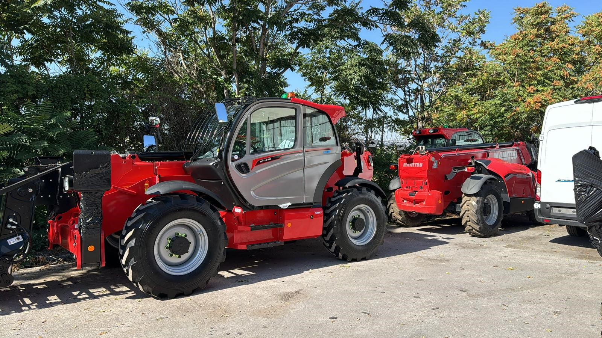
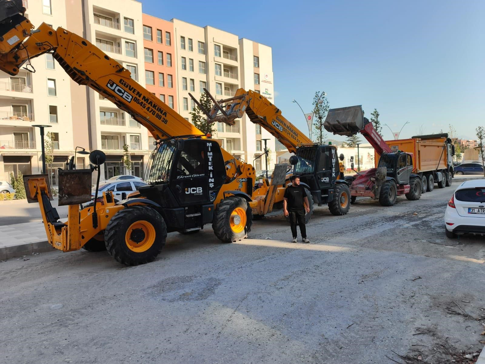
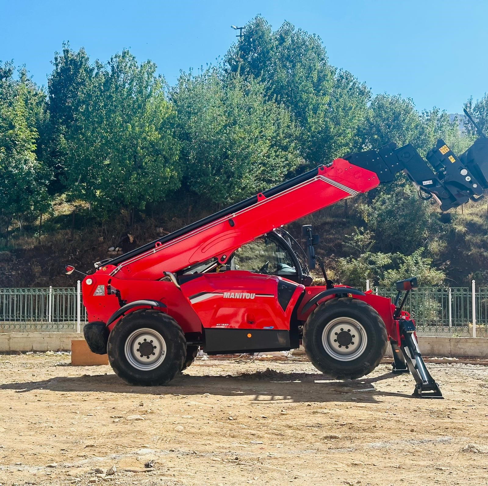
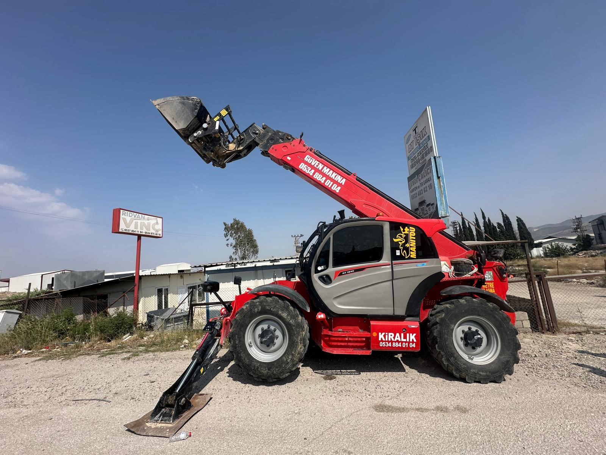

Kiralık Telehandler
Yük kaldırma, yüksek erişim, çatı, cephe, palet taşıma ve montaj işleri için operatörlü telehandler desteği.

Güven Makina
Şantiye, fabrika, depo, montaj ve yüksek erişim işleriniz için operatörlü makine desteği. İşin konumunu ve ihtiyacını gönderin, uygun araç ve fiyatı hızlıca netleştirelim.
Hizmetler
Yük, yükseklik, zemin, süre ve ulaşım bilgisine göre telehandler, ekskavatör, bekoloder veya nakliyat desteği planlanır.

Yük kaldırma, yüksek erişim, çatı, cephe, palet taşıma ve montaj işleri için operatörlü telehandler desteği.

Kazı, dolgu, saha düzenleme, yükleme ve şantiye içi hazırlık işleri için uygun makine yönlendirmesi.

Malzeme yükleme, taşıma organizasyonu ve makine sevki için tek noktadan iletişim ve saha koordinasyonu.
Araçlar
Güven Makina araçları farklı zemin, yükseklik ve erişim ihtiyaçlarına göre sahaya yönlendirilir. Net kapasite, erişim yüksekliği ve ataşman bilgisi iş detayına göre teyit edilir.
Galeri
Telehandler çalışmalarını, araç parkurunu ve tır ile sevk edilen ekipmanları tek alanda inceleyin.
Süreç
Konum, çalışma süresi, yük bilgisi, yükseklik ve varsa saha fotoğrafı paylaşılır.
Zemin, erişim ve çalışma alanı kontrol edilerek uygun makine ve operatör planlanır.
Günlük, haftalık, aylık veya proje bazlı çalışma için sevk ve çalışma takvimi netleştirilir.
Teklif Al
Formu doldurduğunuzda bilgileriniz WhatsApp mesajı olarak hazırlanır. Mesajı kontrol edip doğrudan gönderebilirsiniz.